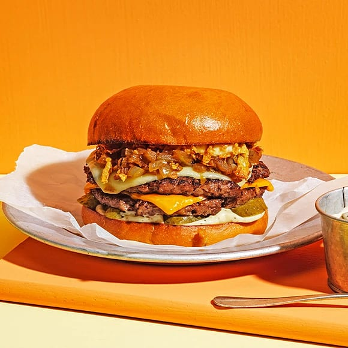

Smashed Burgers

Description
If you have never tried a smashed burger before.. Buckle up and enjoy the
ride!
This recipe will blow your mind when it comes to burgers.
Ingredients
- 1 Brioche Hamburger Bread
- 170g Ground Beef, devided by two balls
- Cheese
- Salt and Pepper
Steps
-
Make two ground beef balls, 85g each. Make sure not to squeeze them too
hard.. you want the air to stay in them.
- Preheat the pan and add a small amount of oil in it.
-
Place the balls of beef in the pan and smash them both with a smasher.
-
Once the burgers are starting to sweat it indicates that they need to be
flipped.
- Add cheese and put a lid on the pan.
- Prepare the bread with ketchup and dressing.
-
Serve the burgers on the bread and eat with a cold beer for best result.